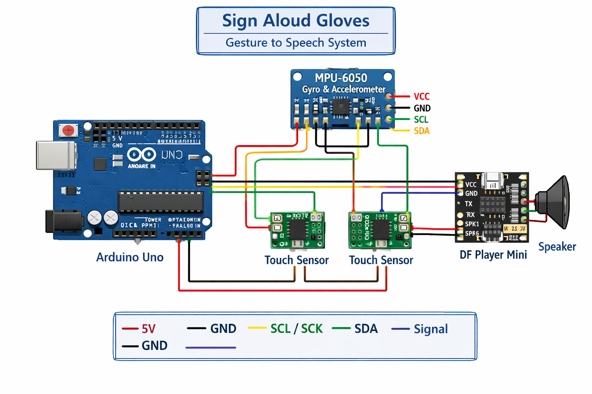

A Gesture to Speech System that converts hand movements into voice output to help mute and speech-impaired people communicate effectively.
School: Nabagram Vidyapith
Project By: Aritra Nath & Sohom Tambuly
Sign Aloud Gloves is an assistive technology project built using Arduino. It detects hand gestures using a gyroscope sensor and touch sensors, then converts those gestures into pre‑recorded voice messages using a DF Player Mini.
Below is the circuit diagram of the Sign Aloud Gloves project showing Arduino Uno, MPU-6050, touch sensors, and DF Player Mini connections.
The MPU‑6050 sensor detects the orientation and movement of the hand. Touch sensors are used to trigger or confirm gestures. Based on the detected gesture, Arduino sends a command to the DF Player Mini, which plays the corresponding audio message through a speaker.